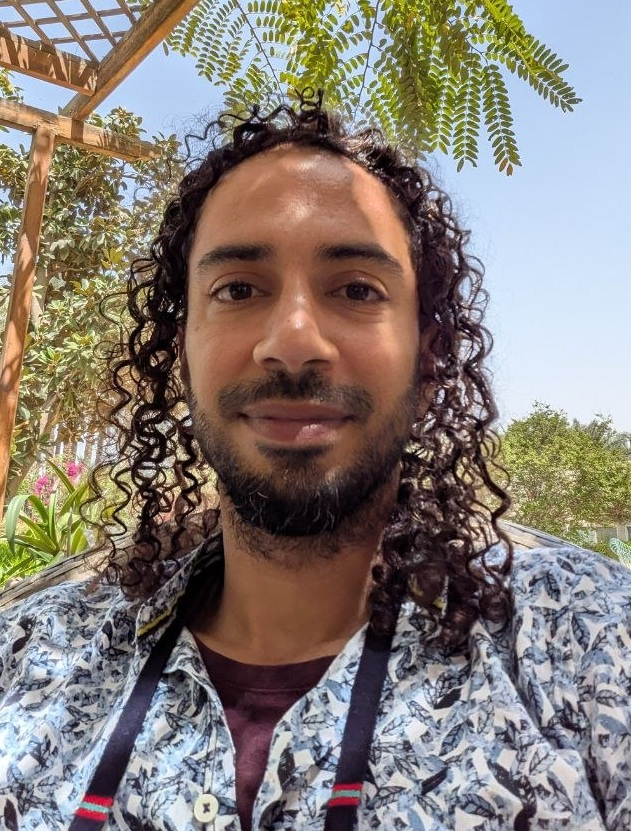
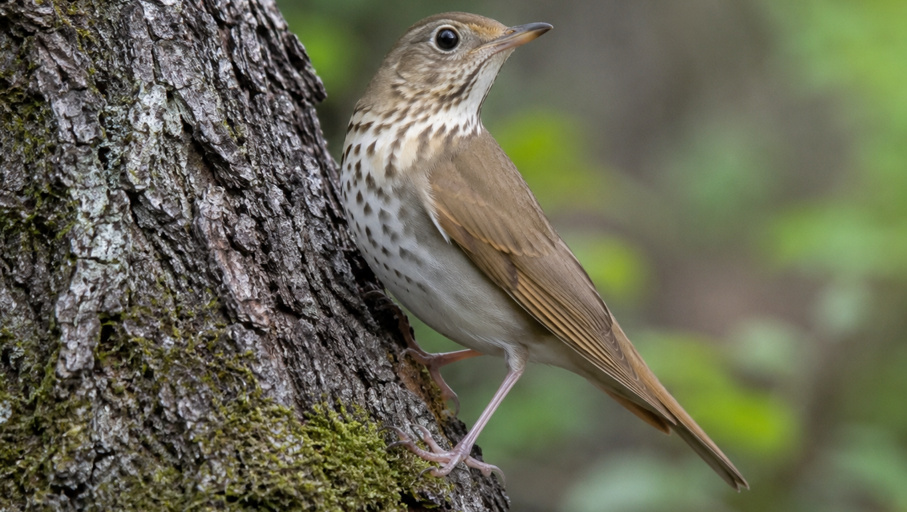
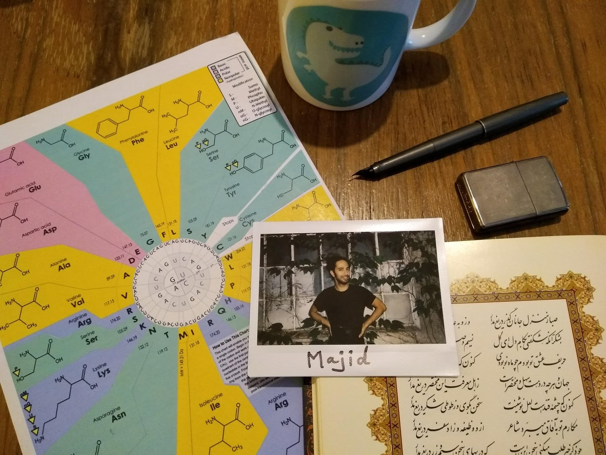
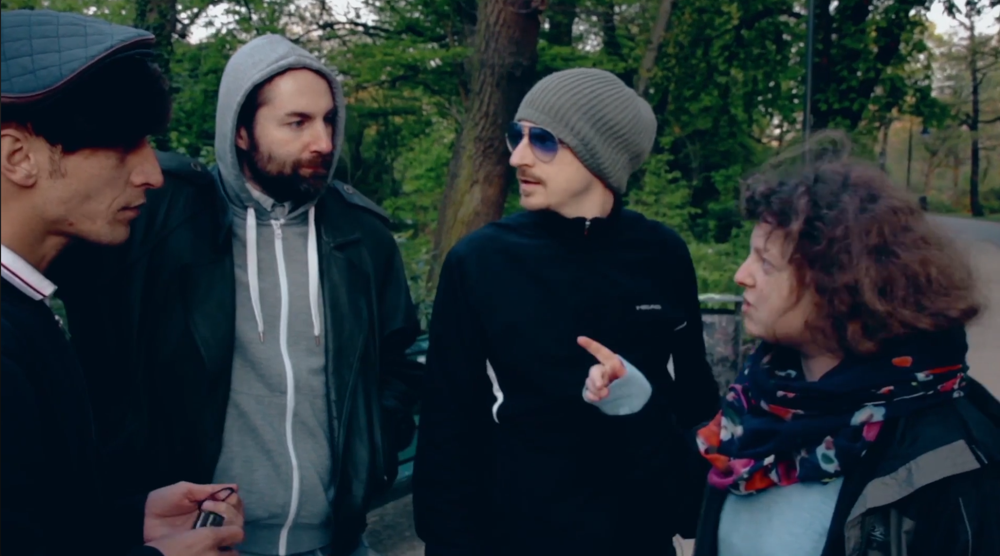

Data Architecture
Enterprise data structures and platform design
Data architecture work around long-lived systems, integrations, and schemas that need to support both operational use and downstream analytics.
- ETL
- Modeling
- Migration
- Ownership
Berlin, Germany
Majid Vafadar
Filling the gap between scientific demand and engineered solutions. I design and maintain durable
architecture for scientific data infrastructure and information systems.
Having a creative mindset to solve problems as well as creating art.

As a product owner of scientific data infrastructures and information systems, I follow engineering practices and scientific standards to provide meaningful data and information efficiently.
Data Architecture
Data architecture work around long-lived systems, integrations, and schemas that need to support both operational use and downstream analytics.
Bioinformatics
Bioinformatics and scientific data work focused on biological analysis pipelines, reproducible processing, and visualization for NGS and related datasets.
Data Engineering
Data engineering for integrating independent systems, building ETL pipelines, and making information flow predictable across teams and tools.
Analytics
Building dashboards and reporting interfaces for scientists, researchers, and organizations that need data to be understandable, not just available.
Machine Learning
Machine learning sits alongside the rest of the stack, supporting exploratory analysis, applied data science, and pattern discovery in larger systems.
Research, data, and software roles across Berlin and earlier engineering work in Iran.
Data Architect, Berlin, Germany. Working on biological data systems and architecture.
Bioinformatician, Berlin Area. Data engineering in metagenomics and metabarcoding pipelines using ETL, plus biological data visualization.
Bioinformatician, Berlin Area. DNA metabarcoding data analysis, metagenomics, and de novo genome assembly support for the Vertebrate Genome Project.
Data Engineer and Software Developer, Berlin Area. ETL pipelines, data migration, data architecture, and Django-based dashboards for researchers.
Data Analyst and Software Developer, Iran. Information systems, dashboards, analytics reports, data visualization, UML process modeling, and business process re-engineering support.
Data Engineer, Iran. Integrated more than 10 subsystems into a single portal covering planning, budgeting, ticketing, and artist evaluation.
Back End Developer. Built an automation system for ATM troubleshooting service and support.
Master of Science (MSc), Bioinformatics & Microbiology, 2015 - 2018.
University Diploma in Sociology, 2011 - 2012.
Bachelor of Engineering (B.E.), Information Technology, 2004 - 2010.
Scientific work across natural history data infrastructure, vertebrate genomics, eDNA, metabarcoding, and integrated biological databases. ORCID
BeGenDiv / VGP
I have conducted a high-quality full-genome de novo assembly of Catharus ustulatus as part of the Vertebrate Genomes Project, in collaboration with the Sanger Institute.
NCBI Full Genome Reference Page
VGP / DNA Nexus
Optimized and tested data pipelines for Vertebrate Genomes Project genome assembly workflows on DNA Nexus.
Nature paperBeGenDiv / BIBS / IGB
Ran metabarcoding pipelines on eDNA samples for BIBS and IGB research on Berlin-Brandenburg water ecosystems.
IZW
I developed a comprehensive integrated database of DNA barcodes for metabarcoding and metagenomics pipelines, called Clio. It works as a reference dna barcoding database that works locally.
MfN / SPNHC
A comprehensive data integration service for the Natural History Museum, presented at SPNHC 2022, SPNHC 2023, and Living Data 2025
Art in its deep essence is the ultimate goal of humans to create something for the sake of creation. I have deep interconnection with all creativity within me that is ready to be express in different forms.
Poetry
Writing, language, and poetic practice as a core artistic medium, with poems and reflections collected on Spreetune.
Visit My Poetry Blog: Spreetune
Performance
Embodied and time-based artistic work, including an active spoken word practice within Berlin's performance scene.
Moving Image
I wrote the screenplay and directed this short film, which plays with simple social dynamics and the fragile power of language.
Watch my movie: Monet (2017)
If you want to talk with me, don't be shy; I am easy to reach.